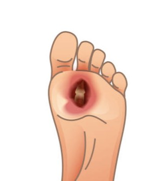

ล้างเท้าให้สะอาดและเช็ดให้แห้ง ถ่ายในที่แสงสว่างเพียงพอ หลีกเลี่ยงเงาหรือภาพมืดเกินไป ถ่ายให้เห็นทั้งบริเวณแผล และให้เครื่องหมาย + อยู่ตรงกลางของแผล
แอปนี้เป็นการประเมินเบื้องต้น ไม่ใช่การวินิจฉัยจากแพทย์
ตรวจสอบรูปภาพให้ชัดเจนก่อนยืนยันเพื่อเริ่มวิเคราะห์ความรุนแรง